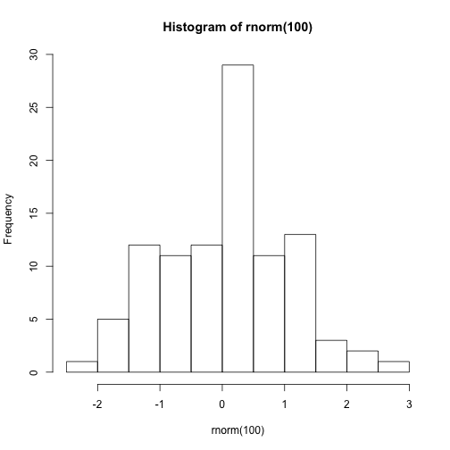
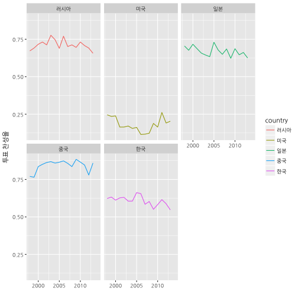

데이터 과학
UN 투표 데이터를 통해 본 한국과 주변 강대국
학습 목표
broom팩키지를 활용한 모형 개발 방법론을 살펴본다.- 국제연합(United Nation) 투표 데이터를 통해 동아시아 역학관계를 이해한다.
ggplot등 시각화 방법을 살펴본다.
1. UN 투표 데이터
국제연합 총회 투표 데이터로 6개 사안별로 국가별 투표성향을 분석함으로써 국가별 유사성을 확인할 수 있고, 연도별 분석을 통해 국제 역학관계에 대한 통찰력(Insight)를 얻을 수 있다.
- 6개 분야
- 팔레스타인 갈등 : me “Palestinian conflict”,
- 핵무기와 핵물질 : nu “Nuclear weapons and nuclear material”,
- 군비통제 및 군비해제 : di “Arms control and disarmament”,
- 인권 : hr “Human rights”,
- 식민주의 : co “Colonialism”,
- 경제발전 : ec “Economic development”
- 국가: 한국과 주변 강대국
- 대한민국: “South Korea”
- 미국: “United States of America”
- 일본: “Japan”
- 중국: “China”
- 러시아: “Russia”
- 분석에 사용된 데이터
1.1. 데이터 가져오기
RawVotingdata.tab 데이터 크기가 커서 한국과 주변 4 강대국만을 뽑아 데이터 크기를 크게 줄였다.
# 1. 데이터 -----------------------------------------
# https://dataverse.harvard.edu/dataset.xhtml?persistentId=hdl:1902.1/12379
## 국가 코드표 : COW country codes.csv
cow_ct <- read_csv("data/COW country codes.csv")Parsed with column specification:
cols(
StateAbb = col_character(),
CCode = col_integer(),
StateNme = col_character()
)
# 한국, 미국, 일본, 중국, 러시아
korea_5 <- c("United States of America", "South Korea", "Japan", "China", "Russia")
## UN 토의주제 : descriptionsnew.xls
description <- read_excel("data/descriptionsnew.xls", sheet="descriptions")
## Vote : RawVotingdata.tab --> votes_five_nations.csv
votes <- read_csv("data/votes_five_nations.csv")Parsed with column specification:
cols(
ccode = col_integer(),
session = col_double(),
rcid = col_double(),
vote = col_double(),
year = col_double(),
StateAbb = col_character(),
StateNme = col_character()
)
1.2. 데이터 정제
session 변수가 년도를 나타내는 구분자가 되나 컴퓨터가 이해하는 것이고 사람이 이해하는 연도로 바꾸기 위해 year 변수를 하나 추가한다. session 변수에 1945를 더하면 된다. description 데이터프레임과 병합(조인)하여 6개 분야별 투표율 추이를 확인한다.
# 2. 데이터 정제-----------------------------------------
votes <- votes %>% mutate(year = session + 1945)
votes <- votes %>% left_join(cow_ct, by=c("ccode" = "CCode", "StateNme"="StateNme" ))
k_df <- votes %>%
inner_join(description, by=c("session", "rcid")) %>%
dplyr::filter(StateNme %in% korea_5) %>%
rename(country=StateNme) %>%
mutate(country = recode(country,
`United States of America` = "미국",
`South Korea` = "한국",
Japan = "일본",
China = "중국",
Russia = "러시아"))2. 1998년 이후 투표 유사도 경향성
한국과 주변 4개 강대국의 투표 찬성율을 한 화면에 찍어보고, facet 기능을 활용하여 각 국가별 연도별 추이를 살펴본다.

국제연합 투표 유사도를 살펴보면 미국과 중국은 대척점에 서 있고, 중국에 러시사아가 일본보다 다소 더 가까이 위치하며 한국은 상대적으로 많이 미국에 가까운 것이 나타난다.
3. 6개 분야별 투표 유사도
gather 함수를 활용하여 facet 기능을 활용할 수 있도록 변경시키고 나서, 각 분야별 국각별 투표 유사도를 살펴본다.
- 인권: 2005년 이후 중국과 러시아가 미국과 대척점에 서 있고 한국과 일본이 그 중간 국가간 유사도를 보임
- 핵무기와 핵물질, 군비통제 및 군비해제: 표면적으로는 미일 연합을 강조하고 있지만, 국제연합 투표 유사도에 있어서는 일본이 한국보다 훨씬 더 중국과 투표 유사도가 높음. 특히, 2000년 초반보다 2000년대 후반 이후 핵무기와 핵물질의 경우 투표 유사도에 대한 차이가 더 벌어짐.